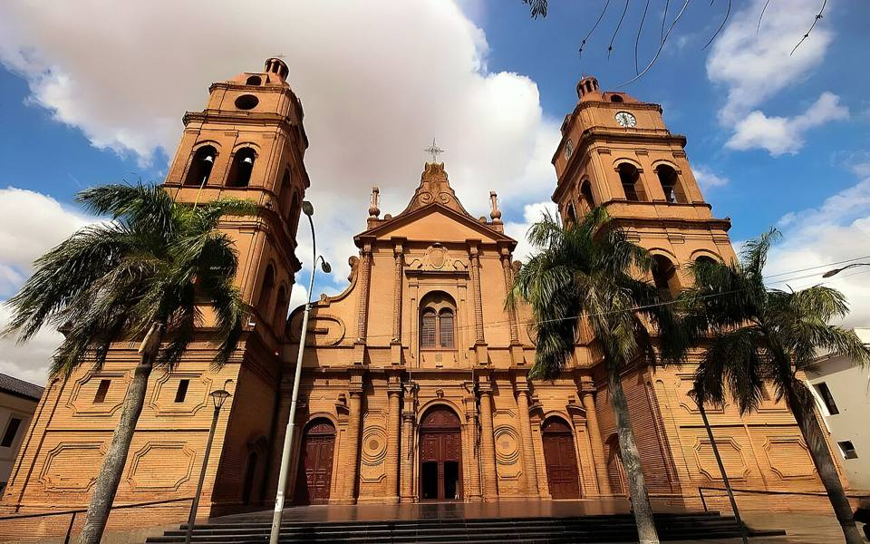
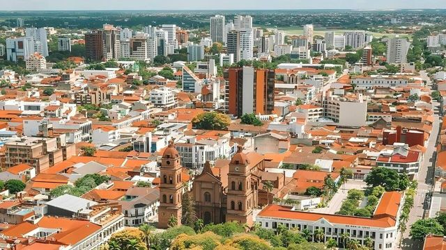
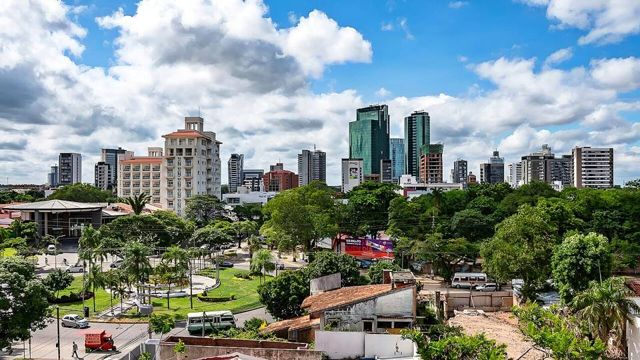
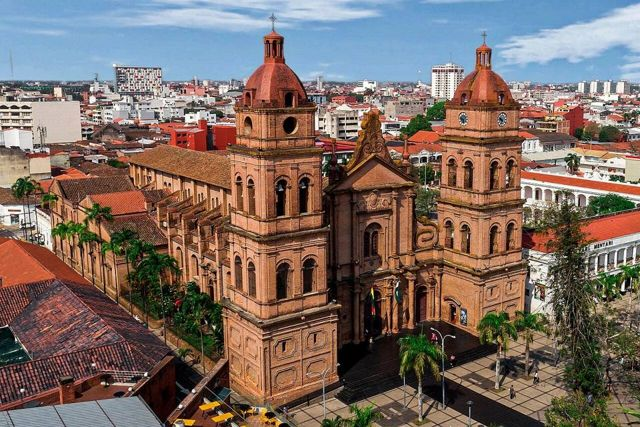
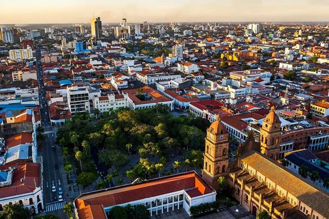
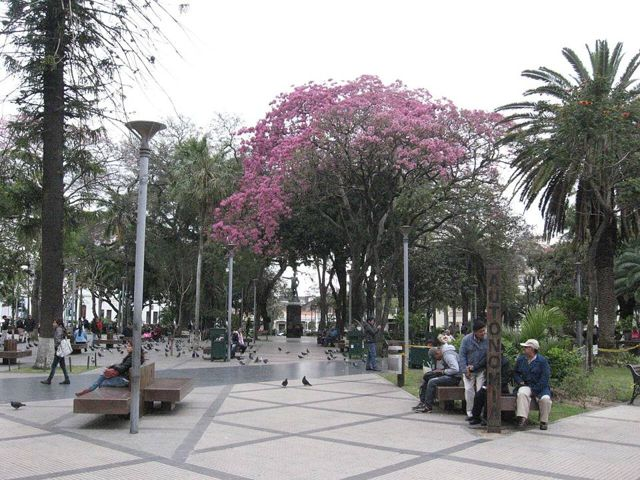
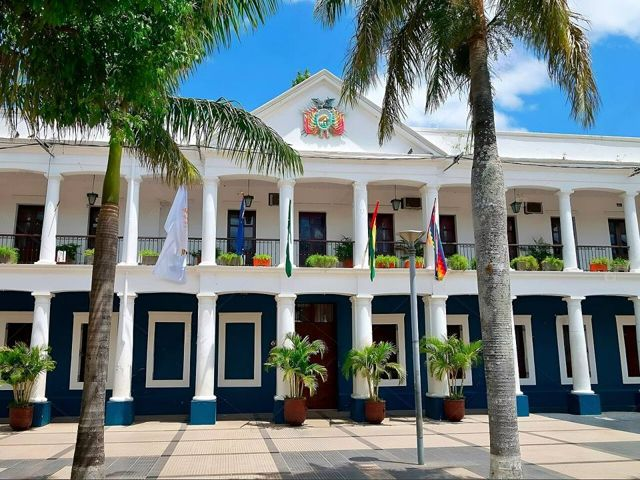

Santa Cruz de la Sierra
Departamento de Santa Cruz · Ciudades

Santa Cruz es la gran ciudad del Oriente boliviano: calurosa, tropical, moderna y fiestera, muy distinta de las ciudades andinas. Se pasea por la gran plaza con sombra, uno se baña en el Biocentro Güembé y prueba la comida cruceña. Muchas veces es por aquí que se llega o se sale en vuelo internacional.
Qué hacer
- Plaza 24 de Septiembre y la catedral (vista desde el campanario)
- Biocentro Güembé (mariposas, piscinas)
- Mercado Los Pozos
- Lomas de Arena (dunas) al lado de la ciudad
Qué comer
- MajaditoArroz cocido con charque o pollo, con huevo frito y plátano frito. El plato de Santa Cruz y el Beni.
- Sonso de yucaMasa de yuca y queso asada en un palito. Especialidad del Oriente, para comer caliente.
- Cuñapé y pan de arrozPanecitos de queso con almidón de yuca o con arroz, calientes con un café en la mañana.
- Frutas tropicalesMangos, piñas, papayas, achachairú (una frutita ácida) y jugos frescos por todas partes por pocos bolivianos.
También aquí
- Fiestas Carnaval cruceñoEl carnaval tropical: comparsas disfrazadas, corso, música día y noche, y guerra de agua y pintura en toda la ciudad.
- Artesanía y mercados Mercado Los PozosEl mercado de Santa Cruz para frutas tropicales, jugos frescos y comida cruceña: ideal para probar un majadito o un cuñapé.
Cómo llegar a Santa Cruz
Cotoca Carretera (bus, auto) · 30 min
Micro o taxi desde Santa Cruz.
Sucre Avión · 45 min de vuelo
Vuelos de BoA.
Lomas de Arena Carretera (bus, auto) · 45 min
Taxi o tour (camino de arena: 4x4).
Cochabamba Avión · 55 min de vuelo
Vuelos diarios de BoA al aeropuerto Viru Viru.
Trinidad Avión · 50 min de vuelo
Vuelos de BoA.
Tarija Avión · 1 h de vuelo
Vuelos de BoA.
La Paz Avión · 1 h de vuelo
Vuelos de BoA muy frecuentes.
Espejillos Tour en 4x4 o excursión · 1 h 30 a 2 h
Auto o tour en 4x4: el último tramo es difícil.
Buena Vista Carretera (bus, auto) · unas 2 h
Buses y minibuses hacia Yapacaní (bajar en Buena Vista).
Laguna Volcán Carretera (bus, auto) · unas 2 h
Carretera a Samaipata hasta Bermejo y luego camino de tierra.
Samaipata Carretera (bus, auto) · 2 h 30 a 3 h
Taxis compartidos y trufis desde Santa Cruz (avenida Grigotá, 4.º anillo).
San Javier Carretera (bus, auto) · 4 h 30
Bus desde la Terminal Bimodal.
San José Carretera (bus, auto) · 4 h 30
Buses frecuentes.
Camiri Carretera (bus, auto) · unas 5 h
Bus desde la Terminal Bimodal de Santa Cruz.
San José Tren · 6 h
Tren de la Ferroviaria Oriental (línea Santa Cruz – Puerto Quijarro).
Villamontes Carretera (bus, auto) · 7 a 9 h
Bus nocturno desde la Terminal Bimodal de Santa Cruz.
Yacuiba Carretera (bus, auto) · 8 a 10 h
Bus nocturno desde la Terminal Bimodal de Santa Cruz.
Trinidad Carretera (bus, auto) · 8 a 10 h
Bus nocturno.
Roboré Tren · 9 a 10 h (de noche)
Tren nocturno de la Ferroviaria Oriental (Expreso Oriental o Ferrobus) desde la estación de Santa Cruz.
Práctico: se duerme en el tren y se llega en la mañana.
Cochabamba Carretera (bus, auto) · 9 a 11 h
Buses nocturnos muy frecuentes (Terminal de Cochabamba a la Terminal Bimodal de Santa Cruz).
Sucre Carretera (bus, auto) · 12 a 15 h (de noche)
Bus nocturno.
Fotos de Santa Cruz de la Sierra









.jpg){kind=link}


Otros lugares de la región
 CotocaEl santuario de la Virgen de Cotoca y sus alfareros, a 20 km de Santa Cruz.
CotocaEl santuario de la Virgen de Cotoca y sus alfareros, a 20 km de Santa Cruz. Lomas de ArenaDunas de arena blanca y lagunas al sur de Santa Cruz.
Lomas de ArenaDunas de arena blanca y lagunas al sur de Santa Cruz. EspejillosPozas naturales y cascadas en el río, cerca de Santa Cruz.
EspejillosPozas naturales y cascadas en el río, cerca de Santa Cruz. Laguna VolcánUna laguna escondida en una hoyada de cerros cubiertos de bosque.
Laguna VolcánUna laguna escondida en una hoyada de cerros cubiertos de bosque. SamaipataPueblo bohemio entre Andes y bosque: El Fuerte (UNESCO) y el parque Amboró.
SamaipataPueblo bohemio entre Andes y bosque: El Fuerte (UNESCO) y el parque Amboró. Parque Nacional AmboróBosques de nubes y helechos arborescentes, muy rico en aves.
Parque Nacional AmboróBosques de nubes y helechos arborescentes, muy rico en aves. Buena Vista (Amboró norte)Pueblito al pie del parque Amboró, del lado del bosque tropical: ríos, aves y café.
Buena Vista (Amboró norte)Pueblito al pie del parque Amboró, del lado del bosque tropical: ríos, aves y café. VallegrandePueblo colonial de montaña, en el corazón de la Ruta del Che.
VallegrandePueblo colonial de montaña, en el corazón de la Ruta del Che. La HigueraEl caserío donde fue ejecutado el Che en 1967, hoy lugar de memoria.
La HigueraEl caserío donde fue ejecutado el Che en 1967, hoy lugar de memoria.